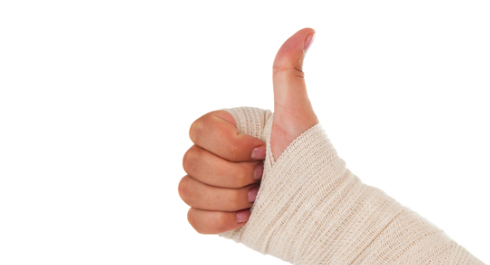
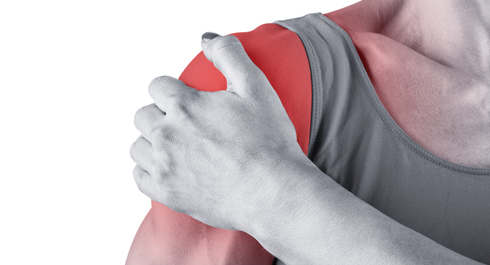
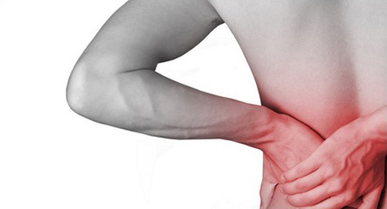
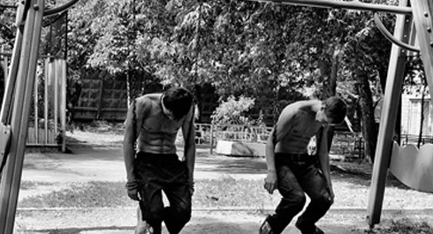

Хотя тренировки с весом собственного тела и являются одним из самых безопасных видов фитнеса, но, как и в любом другом виде физической активности, вероятность получить травму всё же присутствует. Где-то недостаточно размялся, где-то переоценил свои силы, где-то потерял концентрацию и отвлекся - все это может стать причиной той или иной травмы. О наиболее часто встречающихся травмах у воркаутеров мы и поговорим сегодня.
Первым делом хотим напомнить про инфопост "Травмы и Болезни", где данный вопрос рассматривается в общем ключе. Вообще, когда мы говорим о травмах, то следует говорить не только о том, какие травмы можно получить, но также и о том, почему их можно получить. Иными словами, следует описать и существующие факторы риска для занимающихся на турниках и брусьях. Эти факторы можно разделить на две крупные категории: внутренние и внешние. К первым относятся индивидуальные особенности воркаутера, создающие предпосылки к получению травмы, а ко вторым — особенности окружения (методы тренировки, состояние уличной площадки и т.д.)
Внутренние факторы
Физические характеристики. Рост, вес, возраст, наличие лишнего веса, уровень общей физической подготовки — все эти факторы влияют на вероятность получения травмы. Высоким людям будет сложнее тренироваться, чем тем, кто пониже (за счёт разницы в длине рычагов). Людям постарше будет сложнее, чем молодым. Тем, у кого есть лишний вес, следует постепенно наращивать темп тренировок и не гнаться за теми, кто уже не первый год занимается на турниках.
Психосоциальное состояние. В первую очередь эту группу факторов формируют различные стрессы, которые вы переживаете в жизни. Все они оказывают негативное влияние на ваше психологическое состояние и настрой на тренировку и могут стать катализатором возникновения травмы. Когда вы приходите на тренировку, вы должны сосредоточиться именно на тренировке и оставить все остальные мысли "за бортом".
Внешние факторы
Сложность упражнений. Чем более сложные упражнения вы выполняете, тем выше риск получить травму. В стрит воркауте нет сложных упражнений, но на него оказывают влияние близкие по духу дисциплины (гимнастика и паркур), в результате чего многие занимающиеся начинают пробовать делать сложные гимнастические упражнения и различные виды прыжков на турниках без должной подготовки. Стоит также отметить, что в любых прыжках изначально заложен некий риск получения травмы, поскольку присутствуют моменты, когда теряется контакт с перекладиной.
Внимание и усталость. Потеря концентрации внимания также является одним из основных внешних факторов получения травмы. Особенно часто этот фактор возникает при выполнении простых или рутиных упражнений, которые ты выполнял уже сотни раз.
Реабилитация после травм. Возвращение на спортивную площадку, до момента полного восстановления после заболевания или травмы, часто приводит к повторным травмам. Но даже после полного восстановления нельзя сразу возвращаться к прежнему уровню нагрузок, а необходимо выделить определённый период для постепенного наращивания оборотов. Пока организм не тренировался, его уровень подготовки снизился, это естественно, и поэтому потребуется время, чтобы вернуться к тому уровню, на котором он был до травмы.
Соревнования и подготовка к ним. Мы знаем, что большинство людей занимаются исключительно для себя, но есть и те, кто регулярно принимает участие в различных соревнованиях (по ОФП или фристайлу на турниках). По этому поводу можем дать только один полезный совет — используйте соревнования для тестирования собственного прогресса, а не для того чтобы доказать кому-то свою крутость или потешить своё эго. Результаты, показываемые на таких соревнованиях должны быть следствием уровня подготовки, а не целью тренировок. Точно так же как и оценки в университете должны быть следствием уровня знаний, а не самоцелью. Тогда и риск получить травму будет значительно ниже!
Ну а теперь наш хит-лист частей тела, которые чаще всего травмируются при занятиях на турниках и брусьях:
1. Запястье
2. Локоть
3. Плечо
4. Поясница (спина)
5. Перетренированность
Травмы запястья

Если оценить все упражнения для верхней половины тела, которые есть в воркауте, то запястье активно используется во всех из них! Подтягиваетесь на турнике? Запястье. Отжимаетесь от пола? Запястье. От брусьев? Запястье. Стойка на руках? Запястье. Оно нагружается везде, и поэтому неудивительно, что именно травмы запястья находятся на вершине нашего хит-листа! Ваши запястья в процессе тренировок могут испытывать огромные нагрузки, и если они недостаточно подготовлены, или вы их перегружаете, то беды не избежать.
Все проблемы с запястьями, как, впрочем, и с другими частями тела, можно условно разделить на две категории: легкие и тяжелые, или временные и хронические. К первым можно отнести перегрузку неподготовленного запястья, получаемую на тренировке. Например, многие, когда начинают учить стойку на руках, жалуются на боли в запястьях и кистях. Таким образом организм сигнализирует о чрезмерной нагрузке. Не следует форсировать процесс обучения, дать отдых, и уже на следующий день (или через день) боли не будет. Со временем ваш организм привыкнет к нагрузке и вы перестанете ощущать дискомфорт. Это в теории.
На практике при рьяном подходе к тренировкам и желании научиться всему поскорее, можно перегрузить запястья и уйти за точку невозврата (условно — тот уровень нагрузки, после которого нужен день восстановления). При неудачном стечении обстоятельств можно ещё и растянуть связки или получить какую-нибудь похожую не слишком серьёзную, но неприятную травму. Здесь также придётся дать время на восстановление, возможно даже несколько дней или неделю. В это время следует отказаться от нагрузки на запястья, либо максимально её сократить (убрав все упражнения, вызывающие боль) + использовать специальные фиксаторы запястья, которые будут ограничивать подвижность сустава. Но фиксаторы, как и обезболивающие мази, решают только последствия проблемы, не устраняя её источник, поэтому лучше отказаться от нагрузки на время и дать запястью восстановиться.
Если прошла неделя-другая, а боль не уходит, или если есть подозрения на то, что травма оказалась серьёзной (например, боль возникает в повседневной жизни), то следует обратиться к спортивному врачу и узнать побольше о том, что происходит.
Травмы локтя

На втором месте после запястий идут локти. Они так же участвуют практически во всех упражнениях, связанных с прокачкой верха тела. И когда мы говорим о локтях, то в обязательном порядке необходимо рассказать о самой распространенной проблеме - эпикондилите. Эпикондилит – довольно распространенное заболевание, характеризующееся болями в области локтевого сустава (надмыщелков плечевой кости), которые связаны с развитием воспаления из-за микротравмы сухожилий в локте, возникшей при его перегрузке.
Когда такие перегрузки могут возникнуть при занятиях на турниках и брусьях? Самые частые варианты — при тренировке выходов силой и подтягиваний на одной руке. В первом случае наиболее высока вероятность получения травмы у новичков, потому что их локти сталкиваются с огромной нагрузкой, к которой они чаще всего не готовы. Если вы уже пробовали делать выходы силой, то наверняка вам знакомо это не самое приятное чувство в локтях. С подтягиваниями на одной руке примерно такая же история. Конечно к этому упражнению обычно подходят уже более подготовленными, но всё равно, когда приходится держать весь вес тела на одной руке и ещё поднимать его исключительно за счет работы локтевого сустава, то он испытывает серьезные перегрузки. Поэтому не забывайте хорошо разминаться и не пытайтесь форсировать прогресс, вместо этого — учитесь чувствовать свой организм и понимать, когда можно сделать ещё подход, а когда уже пора заканчивать.
Также проблемы с локтем можно получить, если начать раньше времени изучать сложные гимнастические элементы, такие как передний вис, задний вис или крест на кольцах, в которых идёт огромная нагрузка на локоть, вызывающая переразгибание сустава.
Травмы плеча

Из-за своего строения плечо является одним из самых потенциально травомоопасных соединений в нашем организме. И хотя в стрит воркауте не так много упражнений, где его можно травмировать, но я решил расположить травмы плеча на третьем месте в сегодняшнем списке. К счастью для многих, наиболее распространенными видами травм являются растяжения и воспаления мышц, связок и сухожилий плеча. Это не так серьёзно, и если дать определённое время для восстановления, то можно будет спокойно возвращаться к активным тренировкам.
Плечевой сустав является одним из самых подвижных, поэтому главное, о чем нужно помнить при тренировках определённых упражнений, активно его задействующих (такие как подтягивания и выходы широким и очень широким хватом, печатная машинка и другие), — не стоит сразу пытаться выполнить упражнение в максимальной амплитуде, а нужно начинать с малого и постепенно наращивать амплитуду по мере привыкания плеча к данной нагрузке.
Травмы поясницы (спины)

Чаще всего травмы спины получают те, кто начинает изучать такие продвинутые гимнастические элементы, как стойки на руках, передний/задний висы, флажок и горизонт без соответствующей подготовки базы. В отличие от спортивных гимнастов, на улице мало кто следует проверенным годами методикам тренировок и использует подводящие упражнения. В результате многие просто пытаются повторить то, что увидели на видео. К сожалению подобный подход в 90% случаев приводит к травмам, иногда к таким, после которых об упражнениях продвинутого уровня можно уже забыть. В этом плане спина и поясница наиболее уязвимы в связи тем, что текущий образ жизни современного человека не предполагает особых нагрузок. Мы очень мало двигаемся, очень много сидим (далеко не всегда в правильном положении), и в результате мышцы спины и поясницы не обладают должной силой не только для выполнения сложных упражнений, но даже для того, чтобы предотвратить получение травмы от попыток выполнить эти упражнения.
Хотим также отметить, что когда вы висите на турнике ваш позвоночник находится в расслабленном положении и под действием силы тяжести растягивается. В то же время, когда вы спрыгиваете с турника на землю, вы создаете компрессионную нагрузку, заставляя растянутый и расслабленный позвоночник резко сжиматься. Говоря простым языком, это не очень полезно для него, поэтому следует либо найти турник, с которого вы сможете сходить, а не спрыгивать, либо потренировать мягкое приземление, чтобы максимально компенсировать получаемую нагрузку.
Возможные серьёзные травмы спины - это действительно серьёзно и на всю жизнь. Поэтому подумайте дважды, перед тем как попробовать!
Перетренированность

Перетренированность — это состояние организма, вызванное переутомлением от процесса тренировок. Перетренированность приводит к таким не самым приятным последствиям, как падение результатов, снижение интереса к занятиям, ухудшение общего самочувствия, ослабление иммунитета, повышенная утомляемость и раздражительность и ряду других. Перетренированность, главным образом, возникает от неумения правильно планировать свою нагрузку и разумно подходить к составлению тренировочного графика, и поэтому страдают от неё, в первую очередь, начинающие. Потому что многие, когда только начинают, хотят всего добиться как можно быстрее, а для этого, по их мнению, нужно тренироваться как можно больше. На самом деле нужно тренироваться не больше, а умнее, а это значит, нужно научиться понимать, как работает организм, и вместе с периодами тренировок давать ему также и достаточные периоды отдыха для восстановления сил.
Заключение
Как мы уже говорили в начале сегодняшнего поста, хотя тренировки с весом собственного тела на уличных спортивных площадках и являются одним из самых безопасных видов физической активности, но и в нём всё равно присутствует риск получения травмы. Однако, если держать под контролем внешние и внутренние факторы риска, а также ознакомиться с наиболее частыми травмами (предупрежден — значит вооружен!), то можно свести этот риск к минимуму. Всем успешных и безопасных тренировок!